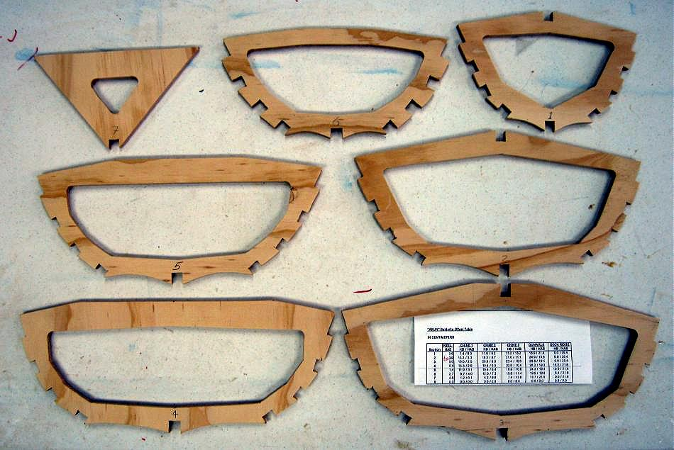

| Cross Sections - Baidarka | Menu Previous Page Next Page |
|

Nikumi Cross Sections - Unlike the many single chine Greenland designs in the manual, the Nikumi is a multi-chine Baidaka. As a result, it has much closer spacing between the gunwales and several chines. There is no need to create a concave curvature between the chines and gunwale, though the curvature is required for the wider span between the keel and chine 1.
|
|